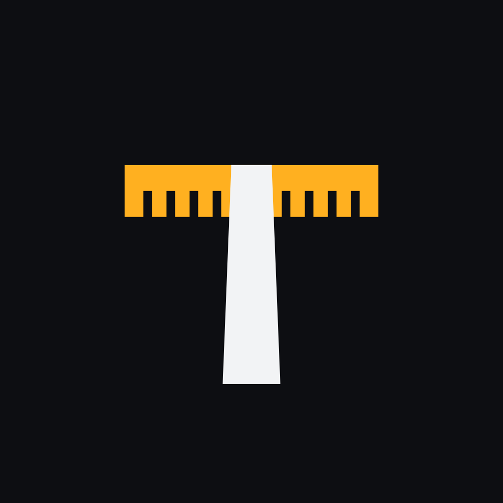
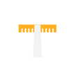
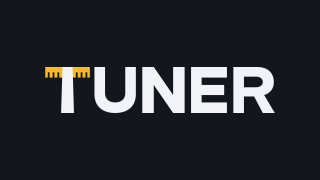
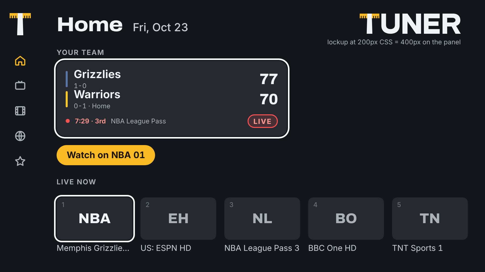

Locked on.
Tuner is one person's private broadcast desk. The mark is a dial scale with the needle locked through it, and since this revision the mark is the T of the word: T+UNER, one word, no second T.



Lockup study · should the T be the logo? Yes. Four ways to do it

Mark anatomy · the T grid (cap height 100)
Bar 97×23 (thickness = the wordmark stem, 23). Six 3.9×11.5 ticks, pitch 10.5. Needle 22 wide at the top, 28 at the baseline (average 25, matching 23-unit stems; the taper is the only soft move). Dotted circle = Android adaptive safe zone at the foreground-layer scale: the bar's corners sit inside it.
v1 → v2.1: bar 88×18 → 97×23, needle 14→20 → 22→28, nine ticks → six, aspect 1.16 → 0.97. Heavier, more letter-like, one drawing in rail, icon and lockup.
Minimum sizes
Mark 24 px tall minimum (ticks drop below 32 px, use mark-small.svg; nothing under 16). Lockup 90 px wide desktop, 140 px on the TV canvas (28 px cap). Clear space = half the cap height all round.
Rail + splash
Rail: the mark alone at 44 px CSS (88 device px on the TV). Boot splash and sign-in: the lockup at 200 px CSS. In the lockup the mark is the T at 1:1 — never a second mark next to it.
Android TV / Google TV banner · 320×180

Full lockup, cap height 46 (v1: 35), inside the central 80×60% safe area. The compact T-in-word lockup lets it grow 30% in the same safe area. Flat canvas, no border, glow or gradient. Ship 320×180, 480×270, 640×360.
Colour revision · what the research changed
Hue map · OKLCH hue angle
Accent vs warning ΔE 9.8 (v1 9.5), warning vs live 14.4 (v1 10.3). Still close under deuteranopia, so state is never colour alone: icon + word, always.
v1 → v2.1 colour decisions
Type · Archivo + Inter (unchanged)
Kept: the pairing still suits the room. The wordmark's heavy wide grotesque and Archivo wdth 112 rhyme. npm: @fontsource-variable/archivo (standard.css), @fontsource-variable/inter; both SIL OFL 1.1.
Rules
- Do mark only on bg-0/bg-1; amber bar + white needle; wordmark letters text-1.
- Do amber for the mark, one primary action per screen, selected nav, progress, "your team". Nothing else.
- Do focus = white 3px ring with a 2px canvas gap + lift. State = icon + word + colour, never colour alone.
- Don't set a second T next to the mark, or the word without its mark-T ("UNER" is not a wordmark by itself).
- Don't gradients, glows, shadows, scanlines, arcs, ribbons or a third colour on the mark.
- Don't use amber for warnings, red for buttons or errors, a status colour as a fill behind text, or pure #000 / #FFF surfaces.
- Don't rotate, outline or recolour the needle; keep it white (or currentColor in mono).
Sample TV screen · 960×540 canvas as seen on a 1080p panel
